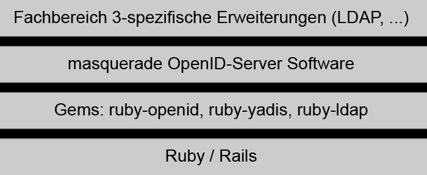

IdM im akademischen Umfeld
Entwicklung und Evaluation eines Pilotsystems mit OpenID
Dennis Blöte
Kolloquium, 22. August 2008
Retrospektive
- Zusammenfassung des Projekts
- Beschreibung des IdM-Systems
- Ausstehende Fragestellungen
- Eingehen auf Kritik aus den Gutachten
Fokus und Ziel
- Entwicklung eines IdM-Systems mit OpenID
- Integration in bestehende Infrastruktur
- Identity Provider und Relying Parties
- Situated Software ermöglichen
- Evaluation / Bewertung des Praxiseinsatz
Was wurde erreicht?
» Das entwickelte IdM-System ist einsatzbereit
Demo
Identity Provider und ILVP

Architektur des Systems

Software-Schichten des Systems

Definition der Attribute
- Austausch mittels Attribute Exchange oder Simple Registration
- Attribute Exchange fehlen die benötigten Attribute
- Definition im Hinblick auf bestehende Standards (eduPerson und swissEduPerson)
Ausstehende Fragestellungen
- Wie geht man mit Wiedervergabe von IDs um?
- Was passiert, wenn ein zentraler Account gelöscht wird?
- Wie sieht es mit Datenschutz aus?
- Anwendbarkeit / Praxiseinsatz des Systems?
Offene Fragen durch die entfallene Evaluation
- Abdeckung der Anwendungsfälle
- Usability / Akzeptanz des IdM-Systems
- Grenzen des Systems
Kritik aus den Gutachten
- Verwendete Quellen
- Formale Fehler (Fußnoten, Literaturverzeichnis)
- Textlayout
- Teilweise unklare Zusammenhänge
Danke für die Aufmerksamkeit!
Ablauf der Authentifizierung

Geplantes IdM-System des ZfN